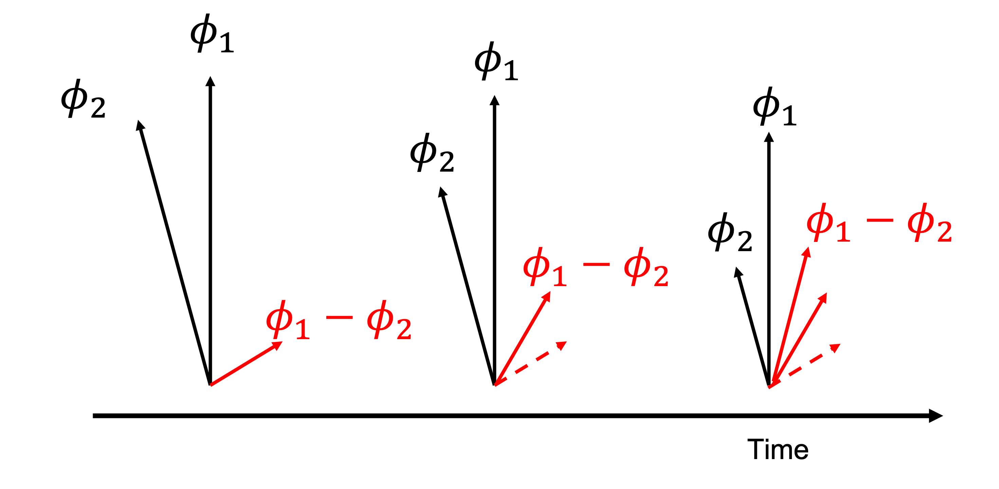
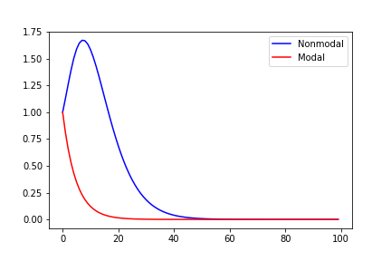
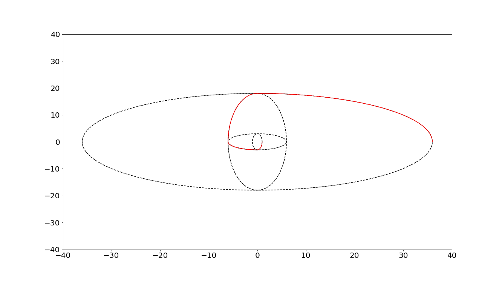

Week 8: The generalized stability theory#
In week 7, we learn how to analyze the stability in a numerical scheme and GFD problem. However, there are a few unique cases where the unstable environment doesn’t exist but we still see the growth of unstable mode. You might wonder how is that possible? Atmospheric scientists also found this feature around late 1990s, thus they turned their attention to so-called non-modal system. We will get into more details later; but now, let me quickly recap some concepts we learned over the past few weeks which will be the key ingredients in today’s discussion.
Lyapunov exponent (von Neumann Method in numerical modeling)
Dynamical system
initial uncertainty
We know the weather is intrinsically unpredictable due to the imperfect model physics. However, even in the case where we don’t consider those uncertainties (i.e., the governing equation is deterministic and perfect), we still can’t accurately measure the initial states. Lyapunov exponent is an useful metric for quantifying how the small uncertainties at the initial states grows. Referring back to (3) in week 1 (also (138) here), the variables in a certain dynamical system are specified by finite dimensional state vector \(x\) evolving according to the deterministic equations \(f\).
considering that we initialized the model around the point \(y(t)\) and with sufficiently small error \(\delta y= x\), we can somewhat approximate the model with a linear tangent function.
where \(A(t)\) is the linearized function of \(f(t)\) or so-called Jacobian matrix (if you still remember finding a Jacobian matrix is equivalent to using a linear tangent function to approximate nonlinear dynamics). The matrix \(A(t)\) is usually time dependent and its realizations do not commute in most cases (i.e., \(\mathbf{A(t_1)}\mathbf{A(t_2)}\neq \mathbf{A(t_2)}\mathbf{A(t_1)}\)). Therefore, the error growth cannot be determined from the analysis of the eigenvalues and eigenvectors of \(\mathbf{A(t)}\) because when we swap the order of \(\mathbf{A(t)}\), we can have a totally different matrix. This is so-called non-modal system. The generalized instability theory is developed to solve the non-model problem and focuses on propagator operator, which is a matrix mapping the initial error \(\mathbf{x(0)}\) to the error at time \(t\).
Once \(\mathbf{A(t)}\) is available, \(\Phi (t,0)\) in (140) is readily calculated and can be written as
where \(A(i\tau) = A(t_i)\). If \(\mathbf{A}\) is autonomous (time independent), then the propagator is simply the matrix exponential i.e.,
The deterministic error growth is bounded by the optimal growth over the interval [0,t]
The choice here is based on the absolute amplitude. We can also choose an Euclidean norm, i.e., using the growth of total variance/energy to define the growth of signals \(||\mathbf{x(t)}||^2\).
If we choose an Euclidean norm, (143) can be written as,
where \(\mathbf{\Phi (t,0)}^{T}\mathbf{\Phi (t,0)}\) indicates how much the signals have amplified. For (144), if we can find a matrix, \(v\), which gives us \([e^{\mathbf{A}t}]^{T}[e^{\mathbf{A}t}]v_i = \lambda_iv_i\), where \(\lambda_i\) is a constant, then (144) will reduce to
So the amplification we are after is an eigenvalue problem for \(\mathbf{\Phi}^{T}\mathbf{\Phi}\) — equivalently, the \(\lambda_i\) are the squared singular values of \(\mathbf{\Phi}\), and the largest one is what (143) calls \(||\mathbf{\Phi}(t,0)||\).
It is tempting to go one step further and write \(\mathbf{\Phi (t,0)}^T\mathbf{\Phi (t,0)} = e^{2\mathbf{A}t}\), which would turn (145) into an ordinary eigenvalue problem for \(\mathbf{A}\): find \(\lambda_{A,i}\), take the real part as the growth rate and the imaginary part as the oscillation, and recover the traditional stability analysis (von Neumann method). That step is legitimate only when \(\mathbf{A}\) is normal, and the whole of generalized stability theory lives in the gap that opens when it is not. The next section makes this precise.
Note
\(\mathbf{\Phi}^{T}\mathbf{\Phi}=\left(e^{\mathbf{A}t}\right)^{T}e^{\mathbf{A}t}=e^{\mathbf{A}^{T}t}e^{\mathbf{A}t}\), and this collapses to \(e^{(\mathbf{A}+\mathbf{A}^{T})t}\) only when \(\mathbf{A}\) and \(\mathbf{A}^{T}\) commute. Matrix exponentials do not obey \(e^{X}e^{Y}=e^{X+Y}\) in general. Keeping singular values and eigenvalues separate is the single most important bookkeeping habit in this chapter.
Modal vs non-modal#
One key ingredient in generalized stability theory is non-modal system. Physically, modal is defined as that eigen vectors of \(x^Tx\)(or EOF mode in climate science) capture all necessary dynamics regardless of time. However, modal dynamics can’t capture the transient growth of the error, which is important for weather prediction and initiation of the low-frequency variability (so-called stochastic forcing).
To demonstrate the difference between modal and non-modal system, we repeat the same exercise in (145) but apply the eigen value decomposition to \(\mathbf{A}\) instead this time.
Modal analysis: eigenvalues and the spectral abscissa#
Diagonalize \(\mathbf{A}=S\Lambda S^{-1}\), where \(\Lambda\) is diagonal and holds the eigenvalues \(\lambda_j\), and the columns \(s_j\) of \(S\) are the eigenvectors. Substituting into the Taylor series of the exponential,
which works because the inner factors telescope: \(\left(S\Lambda S^{-1}\right)^{n}=S\Lambda^{n}S^{-1}\).
Equivalently, change to modal coordinates \(\mathbf{y}=S^{-1}\mathbf{x}\). The system decouples into \(n\) independent scalar problems, \(\dot{\mathbf{y}}=\Lambda\mathbf{y}\), so that \(y_j(t)=y_j(0)e^{\lambda_j t}\) and
Each mode grows or decays on its own at the rate \(\mathrm{Re}\,\lambda_j\), with \(\mathrm{Im}\,\lambda_j\) supplying the oscillation. The relevant summary number is the spectral abscissa
Modal instability means \(\alpha(\mathbf{A})>0\). Note what kind of statement this is: it describes the behaviour as \(t\rightarrow\infty\), when the least-stable mode has outlived all the others and dominates the sum in (147). It says nothing about what happens on the way there.
Non-modal analysis: the finite-time amplification#
The non-modal question is different: over a finite interval, what is the largest energy growth any initial perturbation can achieve?
This is (143) and (145) written in the language of the singular value decomposition, and it is a singular value problem, not an eigenvalue problem. The payoff is that the SVD hands us the structures as well as the number: the optimal initial perturbation is the leading right singular vector of \(e^{\mathbf{A}t}\), and the leading left singular vector is the shape it evolves into. In the forecasting literature these are the singular vectors used to initialize ensembles.
In general, \(\mathrm{Re}\,\lambda_{j}\) is negative and the eigenvalues are ordered from the largest to the smallest (slow- to fast-decaying mode). A negative \(\mathrm{Re}\,\lambda_j\) indicates the memory of the initial state will gradually decay with the increase of forecast lead time. The question is what happens before that.
Bounding the amplification#
Lower bound. The 2-norm of a matrix is at least its spectral radius, and the eigenvalues of \(e^{\mathbf{A}t}\) are \(e^{\lambda_j t}\). Hence
Note
The lower bound uses the largest real part \(\alpha\), not the most negative one. Read physically: a perturbation can never decay faster than the slowest-decaying mode, because the projection onto that mode is still there. The “most negative eigenvalue” version of this bound is also true, but it is much weaker and it is the wrong statement to remember.
Upper bound. Apply (146) and submultiplicativity of the norm, using \(||e^{\Lambda t}||=e^{\alpha t}\) for diagonal \(\Lambda\):
Note
\(||S||\) here is the induced 2-norm (the largest singular value of \(S\)), not the determinant. \(\kappa(S)\) is the condition number of the eigenvector matrix — a measure of how far from orthogonal the eigenvectors are, and the single quantity that controls everything below.
Combined. Putting the two together,
Both ends of (152) now carry the same exponential \(e^{2\alpha t}\), and the entire gap between them is the prefactor \(\kappa(S)^{2}\). So one number decides whether modal analysis is the whole story.
Normal vs non-normal operators#
Normal \(\mathbf{A}\) (\(\mathbf{A}\mathbf{A}^{H}=\mathbf{A}^{H}\mathbf{A}\); a real symmetric matrix is the familiar case). The eigenvectors are orthogonal, so \(S\) can be chosen unitary and \(\kappa(S)=1\). The two bounds in (152) collapse onto each other:
Energy evolves monotonically, and the eigenvalues really do tell the whole story. This is the “traditional” case in which modal analysis suffices — and it is the case in which the shortcut \(\mathbf{\Phi}^{T}\mathbf{\Phi}=e^{2\mathbf{A}t}\) flagged earlier is legitimate. Physically, we can consider that all of the eigen modes have reached a statistical equilibrium state and their transient interaction doesn’t influence the dynamics of interest. This is the situation when we ask how the weather signals are represented in a climate change problem: on climate change time scales (>10 yrs), all the weather signals have already reached an equilibrium state.
Non-normal \(\mathbf{A}\). The eigenvectors are non-orthogonal, \(\kappa(S)>1\), possibly \(\kappa(S)\gg 1\). Now even when \(\alpha<0\) — every single mode decaying, the system modally stable — \(G(t)\) can climb far above 1 before the eventual decay sets in. This is transient growth, or non-modal amplification, and it is what we see on the hourly to seasonal time scales that matter for weather prediction and for the initiation of low-frequency variability (so-called stochastic forcing).
The mechanism is just cancellation being lost. Suppose we have two eigen modes, \(\phi_1\) and \(\phi_2\), and the phenomenon of interest is their linear combination, say \(\phi_1-\phi_2\). If the two are nearly parallel (which is exactly what \(\kappa\gg1\) means), representing a small initial state requires two large, nearly cancelling coefficients. Given that \(\phi_1\) decays more slowly than \(\phi_2\), the cancellation degrades, and the amplitude of \(\phi_1-\phi_2\) grows with time even though both \(\phi_1\) and \(\phi_2\) are getting smaller and smaller. (see FIG19)

Fig. 20 An example of non-modal growth of signals at finite time.#
The question is what kind of phenomenon is most likely to experience non-modal growth. From (152), we know that the eigen vector \(v_i\), who has the largest \(\lambda\), will experience the most significant error growth. One should notice that the \(v_i\) is different from the eigen modes of state vector. The former quantifies the most unstable signal/initial state while the later quantifies the mode which explains the most variance. There is one unique case that these two are identical, I will let the readers think about what is that? (HW).
When does transient growth start?#
(152) tells us transient growth is possible when \(\kappa\gg1\), but not whether it actually happens. For that, differentiate the energy directly:
so the largest attainable initial growth rate is set by the numerical abscissa, the largest eigenvalue of the symmetric part of \(\mathbf{A}\):
Transient growth occurs when \(\omega(\mathbf{A})>0\), and this can happen even when \(\alpha(\mathbf{A})<0\). The two abscissas answer two genuinely different questions:
criterion |
time scale |
|
|---|---|---|
Modal instability |
\(\alpha(\mathbf{A})>0\) |
\(t\rightarrow\infty\) |
Non-modal (transient) growth |
\(\omega(\mathbf{A})>0\), i.e. \(G(t)>1\) for some \(t\) |
finite \(t\) |
For normal \(\mathbf{A}\), \(\omega=\alpha\) and the two notions coincide — which is another way of saying that the distinction we have spent this section building only exists for non-normal operators.
Note
\(\cdot^{H}\) denotes the conjugate transpose; for a real matrix it is just the transpose \(\cdot^{T}\). The conjugate is needed here because eigenvectors and modal coefficients are complex in general.
Examples of generalized stability problem#
Case 0: a 2x2 example we can do by hand#
Before the numerical cases, here is the smallest example that shows the whole effect analytically. Take
Eigenvalues: \(-\epsilon\) and \(-2\epsilon\). Both negative, so \(\alpha=-\epsilon<0\) and the system is modally stable. Traditional analysis stops here and reports “stable”.
Eigenvectors: \(s_1=(1,0)^{T}\) and \(s_2=(1,-\epsilon)^{T}\). As \(\epsilon\rightarrow0\) these become nearly parallel, and the condition number blows up as \(\kappa\approx 2/\epsilon\).
Propagator:
Peak amplification: the off-diagonal term is the interesting one. It peaks at \(t^{*}=\ln 2/\epsilon\), where it equals \(1/(4\epsilon)\). So the amplitude amplification is \(\approx 1/(4\epsilon)\) and the energy amplification \(G\approx 1/(16\epsilon^{2})\) — arbitrarily large as \(\epsilon\rightarrow0\), although every mode decays.
Mechanism: start from \(\mathbf{x}(0)=(0,1)^{T}\). In the eigenbasis this is the difference of two large, nearly cancelling modal components (it has to be — the eigenvectors are nearly parallel, and we are asking for a vector almost perpendicular to both). Because the two components decay at different rates, the cancellation is progressively lost and the perturbation grows temporarily. This is (147) with \(\phi_1-\phi_2\) made concrete.
Notice how badly the eigenvalues mislead here: they predict decay at rate \(\epsilon\), while the actual transient gain is \(O(\epsilon^{-2})\) in energy. The two statements are both correct and describe different time scales.
Case I#
Here we use two examples to demonstrate the finite amplitude of error growth lead by the non-modal dynamics.
where \(A\) is autonomous. In this case, we can find the diagonal elements are 0.9 indicating that \(A\) is negative and the signal will decay with the increase of forecast lead. However, if we we choose the right initial state, the initial error can still experience significant growth.
In the following figure, we plot the ratio of variance (\(||e^{2At}||\)) between the initial and the final states as a function of time. Blue curve shows the most unstable case and the red curve shows the result when \([1,0]\) is used as the initial state.
#s = np.random.normal(0, 0.1, 1000)
dim = 100
growth1 = np.zeros((dim,1))
growth2 = np.zeros((dim,1))
a = np.array([[0.9,0.3],[0.,0.9]])
x_0 = np.array([[1],[0]])
for tau in range(0,dim):
G_tau = np.linalg.matrix_power(a, tau)
x_tau = np.matmul(G_tau,x_0)
h = np.matmul(np.matrix(G_tau).getH(),G_tau)
w,v = np.linalg.eig(h)
growth1[tau,:] = np.max(w)
growth2[tau,:] = np.matmul(np.transpose(x_tau),x_tau)/np.matmul(np.transpose(x_0),x_0)
plt.figure()
plt.plot(growth1,'b', label='Nonmodal')
plt.plot(growth2,'r', label='Modal')
plt.legend()

Fig. 21 The error growth in the optimal case (blue) and using [1,0] as initial state (red)#
In FIG20, we can find that both blue and red curves gradually decay to 0 when t is big enough. However, the blue curve shows transient growth when \(t=15\).
Case II#
I the second case, we choose two stable linear operators (159) but we swap them regularly.
where \(\omega_1 = 1/2\) and \(\omega_1 = 3\). In the case where there is only one operator, the system trajectory lies on a constant energy surface. However, if we swap the linear operator for every \(T=\frac{\pi}{2\omega_1}\) and \(T=\frac{\pi}{2\omega_2}\), we can find the amplitude grows exponentially.

Fig. 22 Red curve shows the case where we swap the linear operators for every quarter period.#
This feature has very important applications. In mid-latitude regions, the environment is usually not baroclinicly unstable. However, we still observe many baroclinic waves. [] (also see Ch5 in [PH06]) provides a very clean explanation. According to week 2, we know that one necessary criteria of baroclinic instability is the change of sign in background PV gradient. This can lead to counter-propagating baroclinic Rossby wave. However, in an environment where PV gradient never change sign, can we still have counter-propagating wave? The answer is yes.
Similar to FIG19, if there are two modes to construct a barolcinic wave. One decays faster and has shorter period than the other. Their linear combination can lead to the transient growth of the wave signals. If the transient growth over different \(t\) can be accumulated, we can see asymptotically unstable waves.
Why this matters beyond the atmosphere#
The same argument was worked out first in engineering fluid dynamics, and the evidence there is unusually clean. The linearized Navier-Stokes operator for a shear flow (the Orr-Sommerfeld/Squire system) is strongly non-normal, and the classical modal predictions fail outright:
Plane Couette flow and pipe flow are linearly stable at all Reynolds numbers — \(\alpha<0\) everywhere, so modal analysis says they can never become turbulent.
Plane Poiseuille flow becomes linearly unstable only at \(\mathrm{Re}\approx5772\).
Yet all three transition to turbulence at Reynolds numbers far below those thresholds. The resolution is non-modal growth, through the lift-up and Orr mechanisms, which give \(G_{\mathrm{max}}\sim O(\mathrm{Re}^{2})\). That is enough amplification to push a small disturbance into the nonlinear regime, where the linear analysis no longer applies and the flow never gets the chance to follow its modal fate. It is the same story as FIG19 and Case 0, with \(\mathrm{Re}\) playing the role of \(1/\epsilon\).
This is why modern stability analysis reports \(G(t)\), singular value decompositions and pseudospectra alongside the eigenvalues, rather than the eigenvalues alone.
def f(L,y):
return np.matmul(L,y)
# define RK4
def rk4(L,t0,y0,tn,n):
# Calculating step size
h = (tn-t0)/n
#print('\n--------SOLUTION--------')
#print('-------------------------')
#print('x0\ty0\tyn')
#print('-------------------------')
for i in range(n):
k1 = h * (f(L,y0))
k2 = h * (f(L,(y0+k1/2)))
k3 = h * (f(L,(y0+k2/2)))
k4 = h * (f(L,(y0+k3)))
k = (k1+2*k2+2*k3+k4)/6
yn = y0 + k
#print('%.4f\t%.4f\t%.4f'% (x0,y0,yn) )
#print('-------------------------')
y0 = yn
#print(y0)
t0 = t0+h
return yn
# see Ch5 of Palmer and Hagedorn 2008 for more details: https://www.cambridge.org/core/books/predictability-of-weather-and-climate/9A8E7E0A16BC8BA928243F46ED192FE6
# using RK4 for numerical integration
omega1 = 3
omega2 = 0.5
A1 = np.array([[0,1],[-omega1**2,0]])
A2 = np.array([[0,1],[-omega2**2,0]])
v = np.array([[1],[0]])
record = np.zeros((1000,2))
record[0,:] = np.reshape(v,[2,])
record2 = np.zeros((10,1000,2))
t = 0
count = 0
for i in range(10):
# swapping linear operator for every quarterly period
if (i % 4) == 0:
A=A1
omega=omega1
elif (i % 4) == 1:
A=A2
omega=omega2
elif (i % 4) == 2:
A=A1
omega=omega1
elif (i % 4) == 3:
A=A2
omega=omega2
v_template = v
for j in range(999): # fixed operator
t_index = np.linspace(0,20,1000)
v_new = rk4(A,t_index[j],v_template,t_index[j+1],100)
record2[i,j,:] = np.reshape(v_new,[2,])
v_template = v_new
for j in range(100): # swapping linear operators
t_index = np.linspace(0,np.pi/(2*omega),101)
v_new = rk4(A,t_index[j],v,t_index[j+1],100)
record[count,:] = np.reshape(v_new,[2,])
count = count+1
v = v_new
fig=plt.figure()
plt.plot(record2[0,0:110,0],record2[0,0:110,1],'k--')
plt.plot(record2[1,0:700,0],record2[1,0:700,1],'k--')
plt.plot(record2[2,0:110,0],record2[2,0:110,1],'k--')
plt.plot(record2[3,0:650,0],record2[3,0:650,1],'k--')
plt.plot(record[0:400,0],record[0:400,1],'r')
plt.xlim([-40,40])
plt.ylim([-40,40])
plt.xticks(fontsize=20)
plt.yticks(fontsize=20)
fig.set_size_inches(18.5, 10.5)